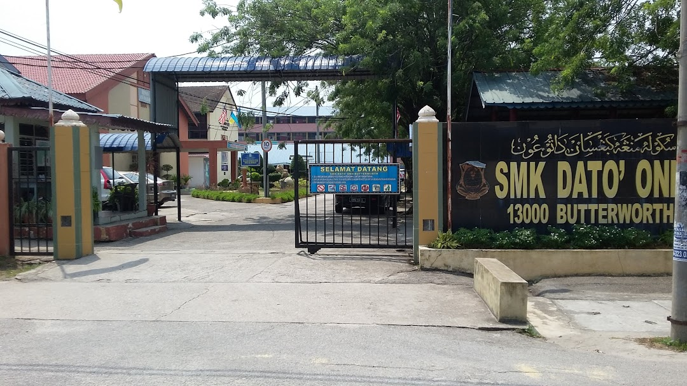

My primary school is at Sekolah Kebangsaan Bertam Indah, Kepala Batas, Penang.
When stepping into the secondary school, I was educated in Sekolah Menengah Kebangsaan Dato'Onn Butterworth, Penang and letting up from form one to form five.

Currently, I continue my studies at the university level in the field of library management at UiTM Kedah, Kampus Sungai Petani in Bachelor of Information Science (Hons.), Library Management.